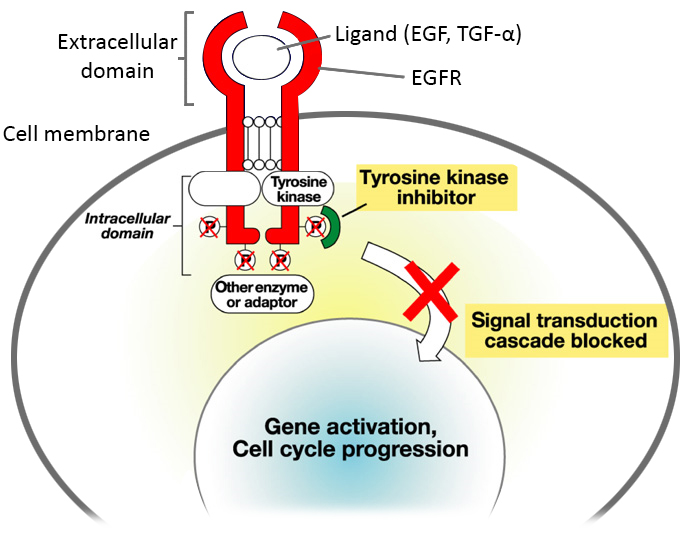

ICO 24h
MÓDULO 3 : Farmacia hospitalaria de dispensación ambulatoria en oncología
Estas moléculas se agrupan según sus dianas terapéuticas
Estructura de dianas moleculares:
3.2 Toxicidad y educación sanitaria
Educación sanitaria al paciente:
Estos nuevos fármacos orales tienen también efectos secundarios, los cuales son diferentes a la quimioterapia clásica o convencional. Muchos de los efectos pueden conducir a una reducción de dosis o incluso la discontinuación de los tratamientos. Estos efectos secundarios están relacionados en parte con el mecanismo de acción de los fármacos:
- Unión a dianas terapéuticas situadas en las células tumorales, pero también a las situadas en las células sanas.
- Por otros mecanismos desconocidos.
A continuación se realiza una breve descripción de los efectos adversos de estas moléculas, su prevención y/o tratamiento.